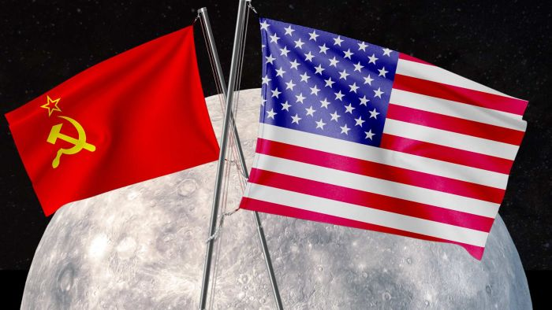

Have you ever had to use a different washroom because of your skin colour? You take going to the bathroom for granted at school or work, but Katherine Johnson could not because of her skin colour. Johnson was born on August 26, 1918, in White Sulphur Springs, West Virginia and died February 24, 2020, Newport News, Virginia. Her father was a janitor who worked extra shifts and her mom was a homemaker; She helped calculate flight paths during her career at NACA/NASA. Johnson was a hardworking and smart student and finished grade eight by age ten. Johnson once said “ I counted the steps. I counted the plates that I washed. [and] I knew how many steps there were from our house to church.” . Her parents moved to a different area in West Virginia just so Jhonson could complete her education by attending high school.
When she was 18 years old in 1936, she went to West Virginia College and earned a bachelor's degree in math. Johonson graduated in 1937 and pursued a teaching job. She taught at a black school in West Virginia until she got offered a spot with two other men to enroll in a graduate school. She left her teaching job to enroll in this graduate school. Soon after her enrollment she left her graduate school as well to marry her husband and take care of her family. After her daughters were older, she went back to teaching at a black school in West Virginia.
In 1952, she discovered there was an open spot at NACA in the segregated unit (the West Unit) when her family took a trip to News Port and applied for the job in 1952. She got the job and moved to News Port to pursue this career. In 1953 she started working in the West Unit. Johnson’s unit was nicknamed the “human computers'' which calculated complicated calculations for their programmers and engineers. President Rosevelt had signed executive law order 8802 which prevented racial, ethnic, and religious discrimination and this also caused more employment for black people . This law helped with their need for more employees for their research, which led Johnson being hired. There was still segregation in her job due to the Jim Crow laws which were heavily implemented in the southern United States at the time . Due to these Jim Crow laws, her bathroom facilities were different from the white employees and were one kilometre away! Imagine, in order to use the bathroom, you had to walk a kilometre just because of your skin colour. She worked in the Maneuver Loads Branch of the Flight Research Division in which she studied flight paths to improve airplane performance.
Young Katherine Johnson ¹
Soviet Union flag, and USA flag on the moon ²
In 1957 when the Soviet Union launched its satellite, Sputnik, into space. This started the space race against Russia and the Soviet Union. After that, she had to give some math for some flight research, which led her to be part of the Space Task Group. The Space Task Group was the first major step America took towards space exploration. Later that year NACA became NASA and abolished their segregational conditions. People in the Space Task managed human space exploration research and engineering. There was still chastity in this task, but Vaughan forced herself into these meetings because of her contribution. She later stated “Girls are capable of doing everything men are capable of doing. Sometimes they have more imagination than men.” (Johnson, K.,2019). In 1961, Freedom 7 was launched with the first-ever American in space (Alan Sheppard). Johnson was responsible for calculating the flight paths and the trajectory of the spaceship. This mission was a success and Jhonson played a major role in its success. She stated “Let me do it. You tell me when you want it and where you want it to land, and I'll do it backwards and tell you when to take off.” This put a substantial portion of the mission's success and failure upon Johnson. Around this time, Johnson became the first black person to write or co-write a report at NASA.
In 1962, due to her major success in her previous mission, she was tasked with the task of calculating trajectory and flight paths for another mission. In this mission, Jhonson had to send John Glenn into an orbit around Earth. The difficulty of this paid off and was successful. It states in an article “worldwide communications network, linking tracking stations around the world to IBM computers in Washington, DC, Cape Canaveral, and Bermuda.” They were all used to keeping Freedom 7 on the right flight path, but they were still slightly inefficient due to their random blackouts and electricity shortages. Johnson helped collect the information for these flight paths and she helped program the numbers into the system. Johnson once stated, “What I like about math is that you are either right, or wrong” (Johnson, K.,2019) She also helped program emergency trajectories and flight paths in case there was something that went wrong. This was harder than sending Sheppard into space because they had to program an entire system across the world for his orbit. It states that Jhonson recalls that Glenn had said to her “if she says I’m good, then I’m ready to go” this shows how much of the project was in Johnson's hands. Johnson was credited for the mission's success and was a big milestone in her career. This also created more tension in the space race against the Soviet Union/Russia.
First man (Neil Armstrong) on the moon ³
In 1968, Johnson helped with some calculations in Apollo 13 but when it failed, she helped bring it down. She contributed to the programming of Apollo 13/11 and the moon landing . Johnson played the same role as her previous missions to plan the flight path and trajectory and then program. Without her, the moon landing would never be possible. This was her hardest mission yet because she had to calculate and program flight paths all the way to the moon! The mission was a success and Johnson had a lot of credit for it. Due to her, the first moon landing was possible. Johnson helped with many other satellite launches in the space shuttle program. After her 35-year career she retired in 1986.
Johnson has taught us that your skin colour and gender does not matter if you have your mind focused and you work hard. She inspired many people by doing this. She had to use a different bathroom facility but still worked on what she was passionate about. She helped the first American get into space, orbit the Earth and helped the first three people get to the moon. She also helped in designing aircraft which helped in the building of early space shuttles. She did all this during the time when there was much racial discouragement and racism. For these accomplishments, Johnson earned many awards over and after her career. She received the NASA team award. She received this award due to her significant role in the human space flight programs and her improvements she added to the program. She also won the Presidential Medal of Freedom by Barack Obama in 2015. This award shows a significant contribution to society and is the highest civilian honor. There was a book published on her called Hidden Figures that was soon turned into a movie. It talks about Johnson's life, her two co-workers (Dorothy Vaughan and Mary Jackson) and their importance at NASA. It also talks about her segregation and racial discrimination she experienced during NACA.